Pv6 Address Types
The IPv6 Address Space
As we already learned, IPv6 addresses are 128-bit long, which means that there are 340 undecillion possible addresses (the exact number is shown below).
340,282,366,920,938,463,463,374,607,431,768,211,456
or reference, in IPv4 with its 32-bit address space, there are 4.29 billion possible addresses.
The Internet Assigned Numbers Authority (IANA) allocates only a small portion of the whole IPv6 space. IANA provides global unicast addresses that start with leading leftmost bits 001. A small portion of the addresses starting with 000 and 111 are allocated for special types. All other possible addresses are reserved for future use and are currently not being allocated.
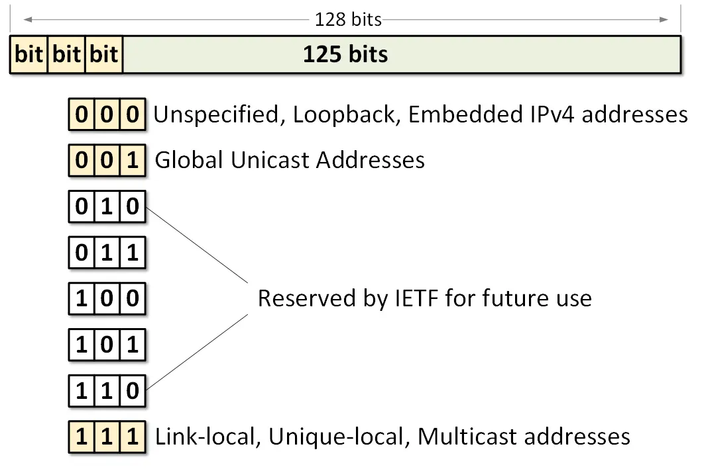
Figure 1. IANA’s Allocation of IPv6 Address SpaceFigure 1 visualizes the allocation logic. Note the following examples of Global Unicast Addresses:
2001:4::aac4:13a2
2001:0db6:87a3::2114:8f2e:0f70:1a11
2c0f:c20a:12::1
At present, in the Internet IPv6 routing table, all prefixes start with the hexadecimal digit 2 or 3, because IANA allocates only addresses that start with the first 3 bits 001
The IPv6 Address Types
An IPv6 address is a 128-bit network layer identifier for a single interface of IPv6 enabled node. There are three main types of addresses as shown in Figure 2:
-
Unicast - A network layer identifier for a single interface of IPv6 enabled node. Packets sent to a unicast address are delivered to the interface configured with that IPv6 address. Therefore, it is one-to-one communication.
-
Multicast - A network layer identifier for a set of interfaces, belonging to different IPv6 enabled nodes. Packets sent to a multicast address are delivered to all interfaces identified by that address. Therefore, it is one-to-many communication.
-
Anycast - A network layer identifier for a set of interfaces, belonging to different IPv6 enabled nodes. Packets sent to an anycast address are delivered to the “closest” interface identified by that address. “Closest” typically means the one with the best routing metric according to the IPv6 routing protocol. Therefore, it is one-to-closest communication.
-
Broadcast - There are no broadcast addresses in IPv6. Broadcast functionality is implemented using multicast addresses.
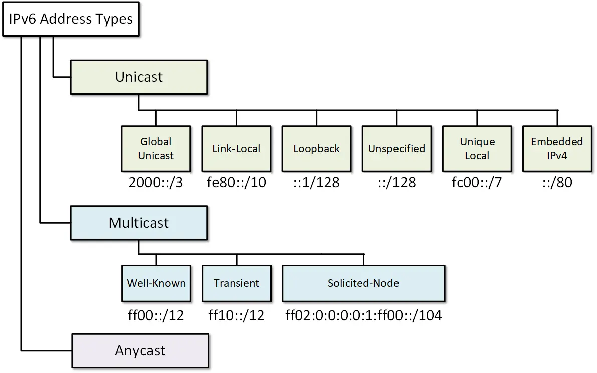
Figure 2. IPv6 Address TypesUnicast Addresses
Aggregatable Global Unicast Address
Aggregatable global unicast addresses are part of the global routing prefix. The structure of these addresses enables for aggregation of routing entries to achieve a smaller global IPv6 routing table. At present, all global unicast addresses start with binary value 001 (2000::/3). Their structure consists of a 48-bit global routing prefix and a 16-bit subnet ID also referred to as Site-Level Aggregator (SLA).
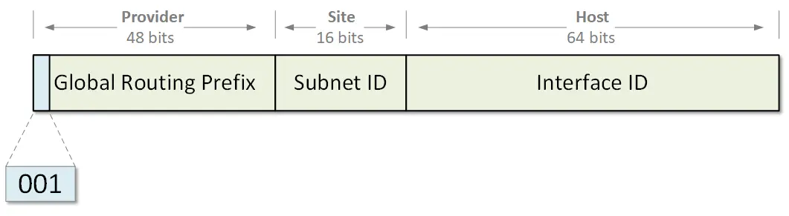
Figure 3. Aggregatable Global IPv6 Address FormatLet’s take a look at the following example of allocating global unicast addresses.
-
IANA currently allocates addresses from the prefix 2000::/3 to the regional providers.
-
For example, part of this address space is allocated to ARIN.
-
ARIN then allocates sub-parts of this address space 2001:18::/23 to ISPs and large customers. Note that the prefix was given to Customer 1 2001:18B1:1::/48 is part of the bigger prefix 2001:18B1::/32 owned by the ISP, which itself is part of the bigger prefix 2001:18::/23 of ARIN and so on. That’s is why these global IPv6 unicast addresses are called aggregatable.
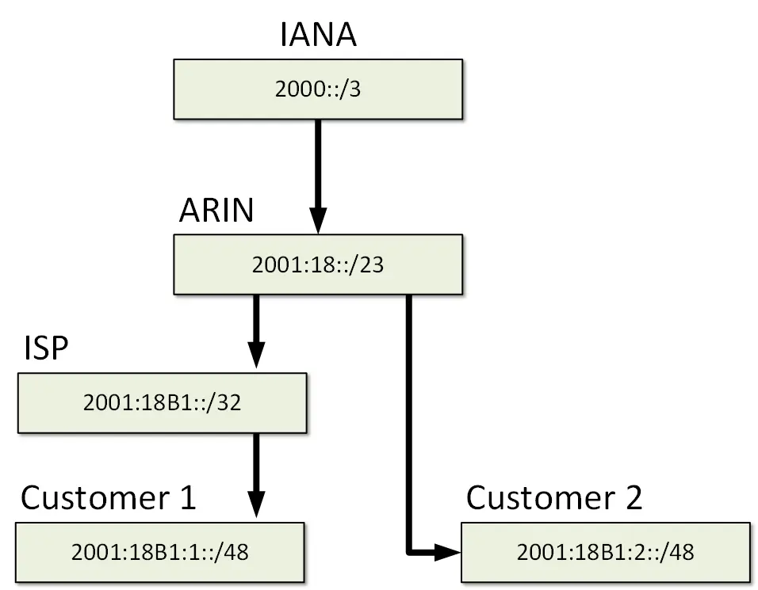
Figure 4. IPv6 Allocation ExampleLink-Local
IPv6 link-local is a special type of unicast address that is auto-configured on any interface using a combination of the link-local prefix FE80::/10 (first 10 bits equal to 1111 1110 10) and the MAC address of the interface. The structure of a link-local address is shown in Figure 4.
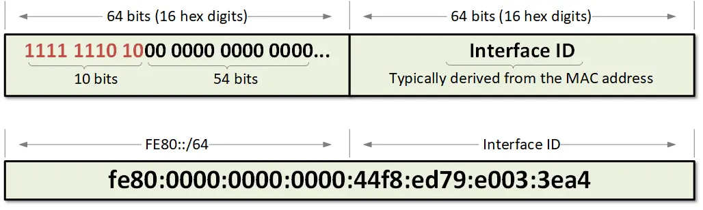
Figure 5. IPv6 Link-local address structureThe idea is to enable nodes attached to a common link to communicate without the need for globally unique addresses. Similar concept to 169.254.0.0/16 in IPv4. If we connect several IPv6 enabled nodes to a switch, they will auto-configure their interfaces with link-local addresses, will discover each other, and be able to communicate. The scope of the link-local address is only its respective link. Routers do not forward packets that have a link-local source or destination addresses to other links.
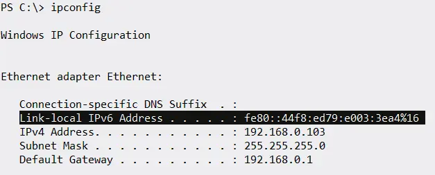
Figure 3. IPv6 Link-local address auto-configured on WindowsLoopback
In both IPv4 and IPv6, a loopback address identifies a logical interface that has no physical representation and is always up and running. Packets sent to a loopback address are returned (looped) on the same interface. In the computer world, loopback addresses are typically used for testing the TCP/IP networking stack.
In IPv4, the entire network 127.0.0.0/8 address range is reserved for loopback addresses but all leading operating systems use the famous address 127.0.0.1 called “localhost” by default. The rest of the 127.0.0.0/8 address space is typically not used.
In IPv6, the IPv6 address 0:0:0:0:0:0:0:1/128 is reserved for loopback identifier. It can be shortened to ::1/128 using the rules we have learned in the previous lesson.
Unspecified
In IPv4 and IPv6, the unspecified address in a special type of address with all binary bits set 0. Therefore, in v4 it looks like 0.0.0.0/32 and in v6 it looks like 0:0:0:0:0:0:0:0 or completely shortened as ::/128. The unspecified address is used by the Operating Systems in the absence of any valid IP address and processes like DHCP.
Routers do not forward packets with source or destination address set to the unspecified address.
Unique Local
A unique local address is a special type of globally unique IPv6 address that has the following characteristics:
-
It has a globally unique prefix similar to global unicast addresses. If it is accidentally leaked outside of the organization, there will be no conflict with other IPv6 global prefixes.
-
Its structure is well-known (shown in figure 4) which allows for easy filtering at site boundaries.
-
It allows sites to be interconnected without creating any address conflicts.
-
It is an Internet Service Provider independent address space. Therefore these addresses won’t overlap with any other ISP assigned range. Application threats these address as regular global IPv6 ones.
Internet routers filter out any incoming or outgoing Local IPv6 unicast routes. The structure of a unique local address is shown below.
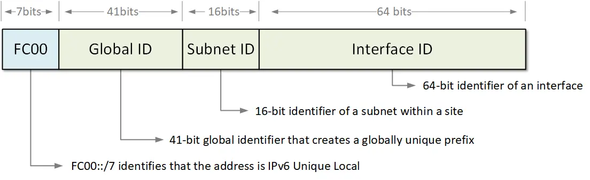
Figure 6. IPv6 Unique-local Address StructureEmbedded IPv4-in-IPv6
Embedded IPv4-in-IPv6 is a unicast address that has only zeros in the first 96-bits of the address and an IPv4 address in the rightmost 32-bits.Therefore, when IPv4 address A.B.C.D (in hex digits) is embedded in IPv6 using this logic, it becomes 0:0:0:0:0:0:A:B:C:D or just ::A:B:C:D. These types of IPv6 addresses are used in automatic tunnels supporting both IPv4 and IPv6 protocol stacks. Shown in the figure below is the structure of an Embedded IPv4-in-IPv6 address.
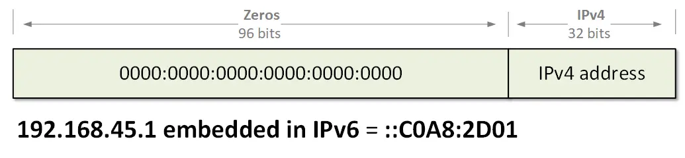
Figure 7. Embedded IPv4-in-IPv6 Address Format.Multicast Addresses
Network multicast is a technique in which a node sends packets to multiple destinations simultaneously (one-to-many). The destinations actually are a set of interfaces, identified by a single multicast address known as a multicast group.
In IPv6, multicast addresses are distinguished from all other types by the value of the leftmost 8 bits of the addresses: a value of 11111111 (hex digits FF) identifies that the address is multicast. Therefore, all multicast addresses are part of the prefix ff00::/8, which is equivalent to the IPv4 multicast address space of 224.0.0.0/4. Two important rules apply to IPv4 and IPv6 multicast:
-
Packets sent to a multicast group always has a unicast source address.
-
A multicast address can not be a source address of a packet.
There aren’t broadcast addresses in IPv6. Instead, in IPv6 this functionality is done using special multicast groups - all-IPv6 devices multicast address and a solicited-node multicast address.
Well-known Multicast Addresses
As you may already know, in IPv4 there are several well-known multicast addresses in the range 224.0.0.0/24. Well-known means that these addresses are predefined and reserved for special use.
In IPv6, all well-known multicast addresses start with the prefix ff00::/12. This means that the first 3 hexadecimal digits of an address will always be ff0. Several examples of such addresses are shown in the table below:
| Address | Function |
| Address | Function |
|---|---|
| FF02::1 | All Nodes Address |
| FF02::2 | All Routers Address |
| FF02::4 | DVMRP Routers |
| FF02::5 | All OSPFv3 routers |
| FF02::6 | OSPFv3 Designated Routers |
| FF02::a | All EIGRP (IPv6) routers |
| FF02::D | All PIM Routers |
| FF02::12 | VRRP |
| FF02::16 | All MLDv2-capable routers |
Table 1. Well-known IPv6 multicast addresse
Solicited-node Multicast Address
A solicited-node multicast address is a special type of IPv6 multicast. It is used as a more efficient approach to IPv4’s broadcast delivery. A solicited-node multicast address is generated automatically using an IPv6 unicast of an interface.
When an interface is configured with an IPv6 unicast address, a solicited-node multicast address is generated automatically based on the unicast address for this interface and the node joins the multicast group. Therefore, any unicast address has a corresponding solicited-node multicast address. This auto-generated multicast group is then used for address resolution, neighbor discovery, and duplicate address detection.
As shown in figure 7, a solicited-node multicast address consists of the fixed prefix FF02::1:FF00:0/104 and the last 24 bits of the corresponding IPv6 address.
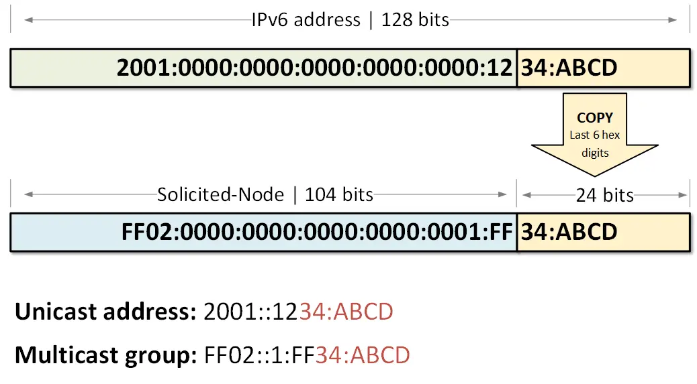
Figure 8. Solicited-node multicast address formatAs we have already learned - there is no broadcast in IPv6. There is no ARP as well. When a node needs to resolve the MAC address of a known IPv6 address, the device still needs to send a request. In this request packet, the destination IPv6 address is the solicited-node multicast address corresponding to the target IPv6 unicast address (for reference, in IPv4 ARP target address is 0.0.0.0), and the destination MAC address is the multicast MAC address corresponding to the multicast address. Only the targeted node ’listens’ to this solicited-node multicast address. Therefore the request will be processed only by the targeted node and not by all node attached to the link as it happens with broadcasted ARP in IPv4
Router#sh ipv6 interface gi0/0/0
GigabitEthernet0/0/0 is up, line protocol is up
IPv6 is enabled, link-local address is FE80::ABCD:1234
No Virtual link-local address(es):
Global unicast address(es):
2001::1234:ABCD, subnet is 2001::/64
Joined group address(es):
FF02::1
FF02::1:FF34:ABCD
FF02::1:FFCD:1234
MTU is 1500 bytes
ICMP error messages limited to one every 100 milliseconds
ICMP redirects are enabled
ICMP unreachables are sent
ND DAD is enabled, number of DAD attempts: 1
ND reachable time is 30000 milliseconds
Anycast Addresses
An anycast address is a network layer identifier typically assigned to more than one interface (a set of interfaces), belonging to different IPv6 enabled nodes. Packets sent to an anycast address are delivered to the “nearest” interface identified by that address. “Nearest” typically means the one with the best routing metric according to the IPv6 routing protocol.
Anycast addresses are allocated from the unicast address space, therefore they are indistinguishable from global unicast addresses. Configuring the same unicast address to more than one interface makes it an anycast address. Devices that have an anycast address assigned must be explicitly configured to recognize that the address is used for anycast communication, as shown in the configuration example below.
Device(config-if)#ipv6 address 2001:4db8:a541::/128 anycast
Summary
Let’s summarize all types of IPv6 address we have discussed in this lesson:
-
Global Unicast
-
At present, IANA allocates global unicast addresses that start with binary value 001 (2000::/3).
-
Their structure consists of a 48-bit global routing prefix and a 16-bit subnet ID also referred to as Site-Level Aggregator (SLA).
-
The structure of these addresses enables for aggregation of routing entries to achieve a smaller global IPv6 routing table.
-
-
Unique-local
-
It has a globally unique prefix similar to global unicast addresses.
-
Its structure is well-known (shown in figure 4) which allows for easy filtering at site boundaries.
-
It is an Internet Service Provider independent address space.
-
-
Loopback
-
The well-known loopback address in IPv6 is ::1/128.
-
Similar concept to 127.0.0.0/8 in IPv4.
-
Typically used for testing the TCP/IP protocol stack in operating systems.
-
-
Unspecified
-
The unspecified address in IPv6 is ::/128.
-
Similar concept to 0.0.0.0 in IPv4
-
-
Embedded IPv4-in-IPv6
-
IPv4 address A.B.C.D (in hex digits) is embedded in IPv6 as 0:0:0:0:0:0:A:B:C:D or just ::A:B:C:D.
-
IPv6 addresses are used in automatic tunnels supporting both IPv4 and IPv6.
-
-
Link-local
-
FE80::/10 prefix.
-
Automatically assigned to any IPv6 enabled interface.
-
Analogous to 169.254.0.0/16 in IPv4.
-
Not routable. They are only valid in the scope of an interface.
-
Used for Neighbor Discovery and Stateless Autoconfiguration.
-
-
Well-known Multicast
-
All well-known multicast addresses start with the prefix ff00::/12.
-
They have a similar function as 224.0.0.0/24 in IPv4.
-
-
Solicited-Node Multicast
-
Each IPv6 unicast address has a corresponding solicited-node multicast address.
-
The structure consists of the fixed prefix FF02::1:FF00:0/104 and the last 24 bits of the corresponding IPv6 address.
-
These special multicast groups are used for address resolution, neighbor discovery, and duplicate address detection.
-
IPv6 Neighbor Discovery Protocol
As we already mentioned a couple of times in this course - there is no Address Resolution Protocol (ARP) in IPv6. But then you may be wondering, how does IPv6-to-MAC resolution is done. How does a node find the physical address of a know IPv6 address? The answer is - using the IPv6 Neighbor Discovery Protocol. It is a more secure and efficient way of handling the Layer 3 to Layer 2 resolution process using multicast messages instead of broadcast like in IPv4.
The term Neighbor or Neighbor node refers to IPv6 nodes that are on the same local segment or in the same layer 2 domain.
Message Types
IPv6 Neighbor Discovery Protocol defines 5 types of messages that use ICMPv6 encapsulation:
-
Router Solicitation (ICMPv6 type 133)
-
Router Advertisement (ICMPv6 type 134)
-
Neighbor Solicitation (ICMPv6 type 135)
-
Neighbor Advertisement (ICMPv6 type 136)
-
Redirect Message (ICMPv6 type 137)
In comparison, ARP messages such as ARP Request and ARP Reply are encapsulated directly in an Ethernet frame.
Let’s examine each message in detail and see what is its role in the process.
Neighbor Solicitation (NS)
When a node needs to resolve the physical address of a known IPv6 address, it sends a Neighbor Solicitation (NS) message on the network segment. This message is the IPv6 alternative to the ARP Request. There are few changes in comparing to ARP though that makes the Neighbour Solicitation more secure and efficient.
Let’s look at the example shown in figure 1 where PC1 wants to resolve the physical address of PC3 - FE80::20C:CFF:FECC: CCCC. PC1 needs to send a Neighbour Solicitation message for this IPv6 address so it creates a new ICMPv6 packet type 135. Type 135 explicitly tells the receiving side that this is an NS packet. In the target field of the ICMPv6, PC1 puts the IPv6 address that it wants to find the MAC of. In our example, it would be one of PC3 - FE80::20C:CFF:FECC:CCCC.
This ICMPv6 message is then encapsulated in an IPv6 packet. For source address at layer 3, PC1 sets its own link-local address FE80:20A:AFF:FEAA:AAAA. The destination address is key in the improved security and efficiency comparing to the ARP protocol in IPv4. For destination address in the IPv6 packet, PC1 set a special type of multicast address called solicited-node multicast. For each configured IPv6 address, every node joins a multicast group identified by the address FF02::1:FFXX:XXXX where XX:XXXX are the last 6 hexadecimal values in the IPv6 unicast address. Therefore, for each configured unicast address, no matter if it is link-local or global, the host joins the respective auto-generated solicited-node multicast group.
In our example, PC1 wants to send the NS message to the node with IP address FE80::20C:CFF:FECC: CCCC. Having the above logic in mind, the node that has that IPv6 address must have joint the solicited-node group generated from that address - FF02::1:FFCC:CCCC.
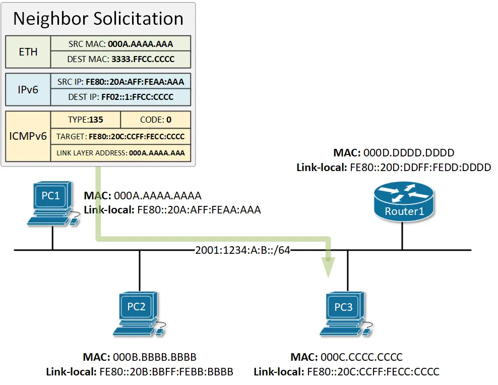
Figure 1. IPv6 Neighbor Solicitation MessageAfter the IPv6 header is filled, the packet is encapsulated in an Ethernet frame. For source MAC address, PC1 sets its own burnt-in physical address. The destination MAC address is set to a multicast MAC generated from the multicast IPv6 address in the layer 3 header using the following formula. 3333.XXXX.XXXX where XXXX:XXXX are the last 8 hex digits in the multicast IPv6 address. In our example, this will result in the physical address of 3333.FFCC.CCCC because are the last 8 hex digits in the destination address FF02::1:FFCC:CCC.
When PC1 sends this Neighbor Solicitation message on the network, there are two possible scenarios:
-
If switches in the local segment are running a protocol called IPv6 Multicast Listener Discovery Snooping (MLD), they will know that only PC3 is subscribed to the multicast group FF02::1:FFCC:CCC and will switch the frame only to PC3.
-
If the switches in the local segment are not running MLD, they will broadcast the frame to every node in the segment in the same way as an ARP frame in IPv4. However, only PC3 will process the packet, because only PC3 is subscribed to this multicast group. All other nodes that get this NS packet will discard it, because they do not listen to this solicited-node address FF02::1:FFCC:CCC.
Neighbor Advertisement (NA)
When PC3 gets the Neighbor Solicitation message from PC1, it will look at the Target field in the ICMPv6 header and will compare it against its own configured IPv6 addresses. The target address matches PC3’s link-local address, so PC3 will reply back to PC1 with a message called Neighbor Advertisement.This message is the IPv6 alternative to the ARP Reply in IPv4.
Let’s examine in detail all values in the message. In the ICMPv6 header, PC3 sets the Type field to 136, which means that this is a NA message. In the Target field, P3 sets the IPv6 address and in the Link-local Address field, it sets the physical address of the interface configured with this IPv6.
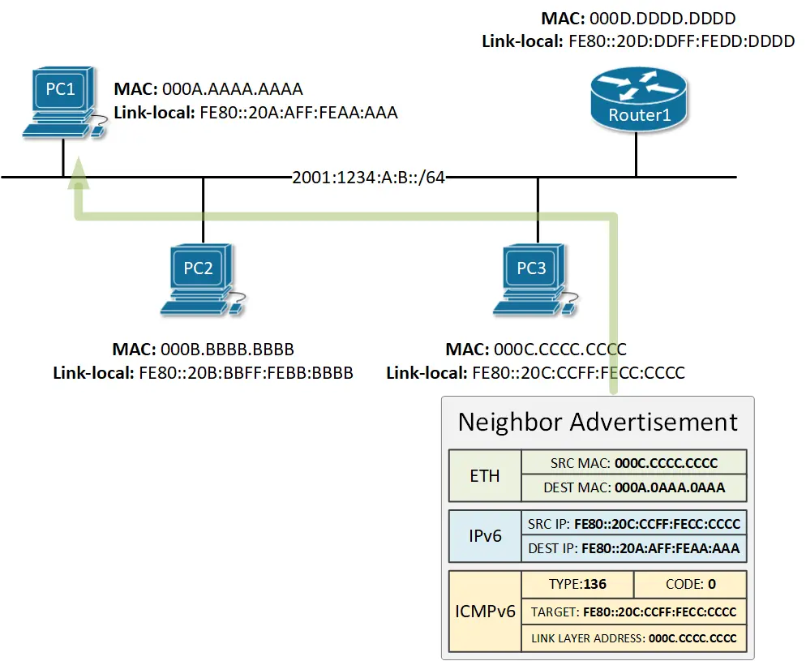
Figure 2. IPv6 Neighbor Advertisement MessageIn the IPv6 header, PC3 sets the source IPv6 address to be its link-local address and the destination to be the link-local address of PC1.
In the Ethernet header, PC3 sets its own physical address as source MAC and the physical address of PC3 as destination MAC.
Note that the Neighbor Advertisement is aunicast message.
Router Advertisement (RA)
IPv6 routers attached to a local segment advertise their presence periodically via an ICMPv6 message called Router Advertisement (RA). The message is destined to the all-nodes multicast address FF02::1 which means that every node on the segment receives and processes it. RA messages contain the prefix and the prefix length used on this segment as well as other parameters such as MTU. Cisco routers advertise their presence on a segment every 200 seconds by default.
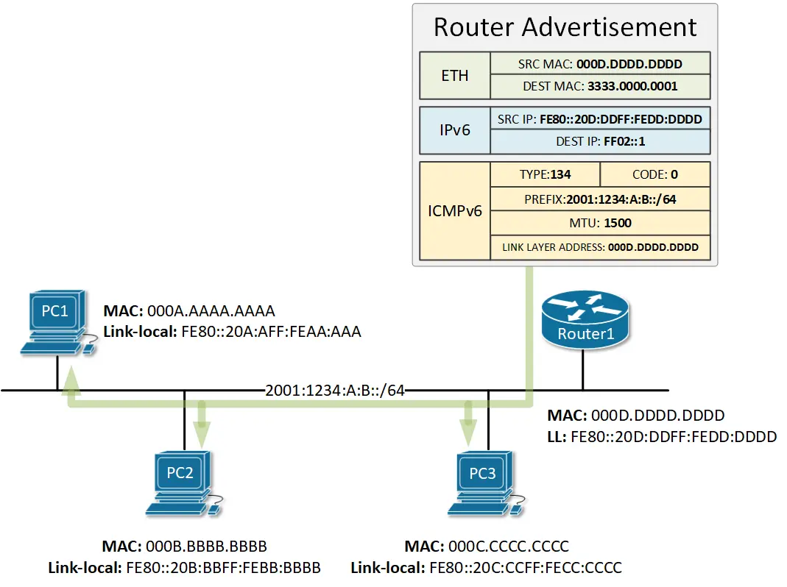
Figure 3. IPv6 Router Advertisement MessageNodes use these messages for services such as Stateless Autoconfiguring (SLAAC) which we explain in detail in this lesson.
Router Solicitation (RS)
As we said above, Cisco routers send Router Advertisement messages every 200 seconds by default. However, when a node is connected to a local segment, it sends out a message called Neighbor Solicitation that requests that routers generate Router Advertisements (RA) immediately rather than at their next scheduled time.
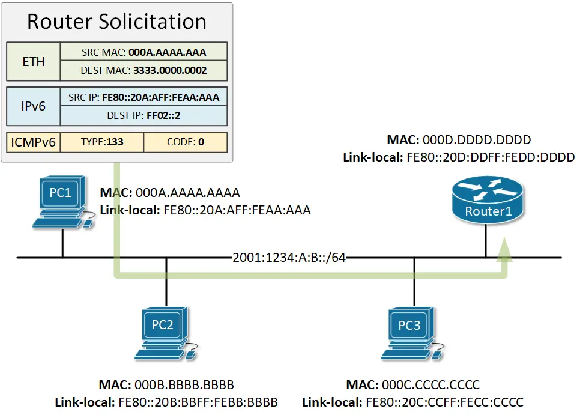
Figure 4. IPv6 Router Solicitation MessageAs you can see in the example in figure 4, the Router Solicitation message is destined to the all-routers multicast address, which means that only the routers on the local segment will process these RS messages.
Summary
IPv6 Neighbor Discovery Protocol works by using 5 types of messages encapsulated in ICMPv6. Each message has the following purpose:
-
Router Solicitation - Hosts use Router Solicitation messages to locate routers in their local segment. Upon receipt of an RS message, routers generate Router Advertisements immediately rather than at their next scheduled time. The RS message uses ICMPv6 type 133 and is destined to the all-routers multicast address FF02::2.
-
Router Advertisement - IPv6 routers advertise their presence in the local segments either periodically, or in response to a Router Solicitation. The RA message uses ICMPv6 type 134 and is destined to the all-nodes multicast address FF02::1. Cisco router sent RA messages every 200 seconds by default.
-
Neighbor Solicitation - The Neighbor Solicitation message is used by nodes to resolve the physical address of a known IPv6 address (target address). The NS message is encapsulated in ICMPv6 type 135 and is destined to the solicited-node multicast group that is auto-generated from the targeted IPv6 address. Only the owner of the targeted IP must have subscribed to this solicited-node group. The message has a similar function to the IPv4 ARP Request but is more secure and efficient because it is not broadcasted to all nodes.
-
Neighbor Advertisement - Neighbor advertisements are used by nodes to respond to a Neighbor Solicitation message. The NA message is encapsulated in ICMPv6 type 136 and is destined for the unicast address in the Neighbor Solicitation message.
-
Redirect Message - Routers informs hosts of a better first-hop router for a destination.
IPv6 Stateless Address Auto-configuration (SLAAC)
Each IPv6 node on the network needs a globally unique address to communicate outside its local segment. But where a node get such an address from? There are a few options:
-
Manual assignment - Every node can be configured with an IPv6 address manually by an administrator. It is not a scalable approach and is prone to human error.
-
DHCPv6 (The Dynamic Host Configuration Protocol version 6) - The most widely adopted protocol for dynamically assigning addresses to hosts. Requires a DHCP server on the network and additional configuration.
-
SLAAC (Stateless Address Autoconfiguration) - It was designed to be a simpler and more straight-forward approach to IPv6 auto-addressing. In its current implementation as defined in RFC 4862, SLAAC does not provide DNS server addresses to hosts and that is why it is not widely adopted at the moment.
In this lesson, we are going to learn how SLAAC works and what are the pros and cons of using it in comparison to DHCPv6.
What is SLAAC?
SLAAC stands for Stateless Address Autoconfiguration and the name pretty much explains what it does. It is a mechanism that enables each host on the network to auto-configure a unique IPv6 address without any device keeping track of which address is assigned to which node.
Stateless and Stateful in the context of address assignment mean the following:
-
A stateful address assignment involves a server or other device that keeps track of the state of each assignment. It tracks the address pool availability and resolves duplicated address conflicts. It also logs every assignment and keeps track of the expiration times.
-
Stateless address assignment means that no server keeps track of what addresses have been assigned and what addresses are still available for an assignment. Also in the stateless assignment scenario, nodes are responsible to resolve any duplicated address conflicts following the logic: Generate an IPv6 address, run the Duplicate Address Detection (DAD), if the address happens to be in use, generate another one and run DAD again, etc.
How does SLAAC work?
To fully understand how the IPv6 auto-addressing work, let’s follow the steps an IPv6 node takes from the moment it gets connect to the network to the moment it has a unique global unicast address.
Step 1: The node configures itself with a link-local address
When an IPv6 node is connected to an IPv6 enabled network, the first thing it typically does is to auto-configure itself with a link-local address. The purpose of this local address is to enable the node to communicate at Layer 3 with other IPv6 devices in the local segment. The most widely adopted way of auto-configuring a link-local address is by combining the link-local prefix FE80::/64 and the EUI-64 interface identifier, generated from the interface’s MAC address.
Figure 1 shows a step by step example of how a local address is generated from MAC address 7007.1234.5678.
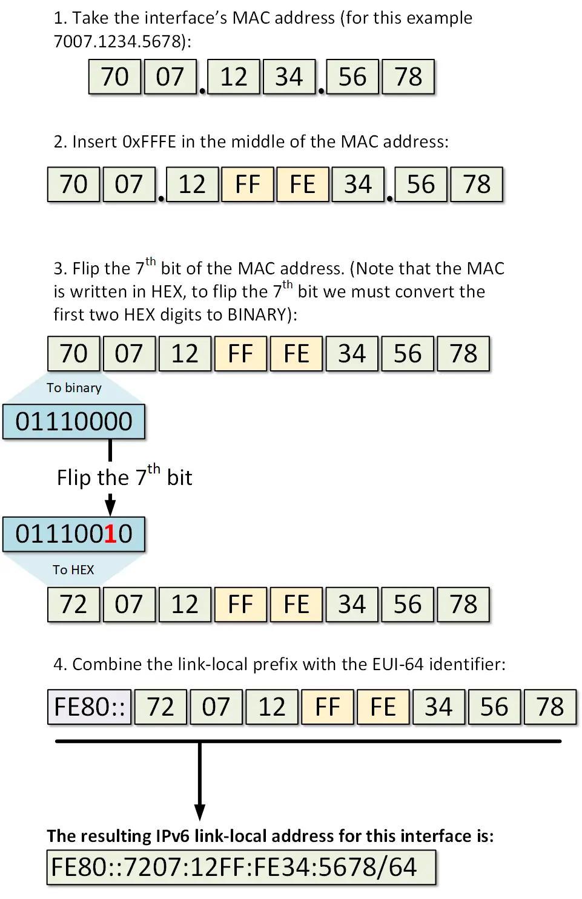
Figure 1. Generating a link-local address from interface’s MAC addressOnce the above steps are completed, the node has a fully functional EUI-64 format link-local address as shown below:
C:\>ipconfig /all
Ethernet adapter Ethernet0:
Connection-specific DNS Suffix..:
Physical Address................: 7007.1234.5678
Link-local IPv6 Address.........: FE80::7207:12FF:FE34:5678
IP Address......................: 0.0.0.0
Subnet Mask.....................: 0.0.0.0
Default Gateway.................: 0.0.0.0
DNS Servers.....................: 0.0.0.0
DHCP Servers....................: 0.0.0.0
DHCPv6 Client DUID..............: 00-01-00-01-C4-35-08-8E-70-07-12-34-56-78
Step 2: The node performs Duplicate Address Detection (DAD)
After the IPv6 host has its link-local address auto-configured, it has to make sure that the address is actually unique in the local segment. Even though the chances that another node has the same exact address are very slim. It has to perform a process called Duplicate Address Detection (DAD).
DAD is a mechanism that involves a special type of address called solicited-node multicast. Upon configuring an IPv6 address, every node joins a multicast group identified by the address FF02::1:FFxx:xxxx where xx:xxxx are the last 6 hexadecimal values in the IPv6 unicast address. Therefore, for each configured unicast address, no matter if it is link-local or global, the host joins the respective auto-generated solicited-node multicast group.
In our example, the last 6 hexadecimal values of the link-local address are 34:5678 so the node joins the multicast group FF02::1:FF34:5678. As PC1 is running a Windows 10 operating system, we can verify that with the following command:
C:\>netsh interface ipv6 show joins
Interface 8: Ethernet0
Scope References Last Address
---------- ---------- ---- ---------------------------------
0 0 Yes ff01::1
0 0 Yes ff02::1
0 1 Yes ff02::c
0 2 Yes ff02::fb
0 1 Yes ff02::1:3
0 2 Yes ff02::1:ff34:5678
Having this logic in mind, we know that if another host has the same exact link-local address, it will also be listening for messages on the solicited-node multicast group auto-generated from this address - FF02::1:FF34:5678. In order for PC1 to check that, it sends an ICMPv6 message with a destination address set to this group, and the source address set to the IPv6 unspecified address. In the ICMPv6 portion of the packet, PC1 puts the whole address in the Target Address field. Figure 2 illustrates that process. PC1 then sends the packet on the network. Only nodes that are listening to this exact auto-generated multicast group will open the packet, all other nodes will discard it. If any node has an IPv6 address that has the same last 6 hex digits, will look in the ICMPv6 portion and check if the target address matches any of its own addresses. If there is a match, the host will reply back that this IPv6 address is already in use. If nobody replies back, PC1 will conclude that this address is unique and available to be used, and will assign it.
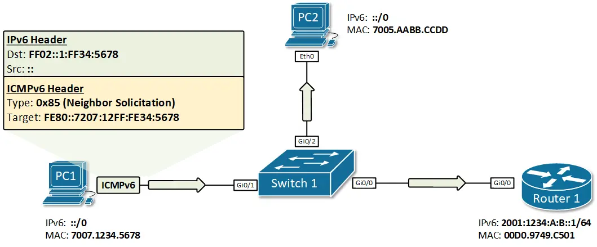
Figure 2. PC1 performs IPv6 DAD for its link-local addressThis process is called Duplicate Address Detection (DAD) and is done upon every new address assignment. In our example, PC1 sends the ICMPv6 Neighbor Solicitation message as shown in figure 2, and nobody replies back. PC1 will then know for sure that this link-local address is unique in this local segment.
Step 3: The node sends a Router Solicitation message
Step 1 and 2 in this example depict the process of generating and assigning a unique link-local address. This process is not exactly part of the Stateless Autoconfiguration feature but without a link-local address, PC1 won’t be able to communicate at layer 3 with any other IPv6 node. Thus, it is a pre-requisite for the SLAAC to work and that’s why we have included it in our example.
After PC1 has a link-local address, it can now start the process of auto-configuring a global unicast address using SLAAC. The first step of this process is to send an ICMPv6 message called Router Solicitation (RS). The purpose of this message is to ‘ask’ all IPv6 routers attached to this segment about the global unicast prefix that is used. The destination address is the all-routers multicast address FF02::2 and for source, PC1 uses its link-local address. Note that only routers are subscribed to multicast group FF02::2, which means that only Router 1 will process this message, and all other nodes on the local segment will discard it.
After Router 1 gets the Router Solicitation message, it responds back with an ICMPv6 message called Router Advertisement (RA). The RA message includes the global IPv6 prefix on the link and the prefix length. In our example, these would be the prefix 2001:1234:A:b:: and the prefix length of /64. For the source of this RA packet, Router 1 uses its own link-local address and destination is the all-nodes multicast address FF02::1. The process is illustrated in figure 3.
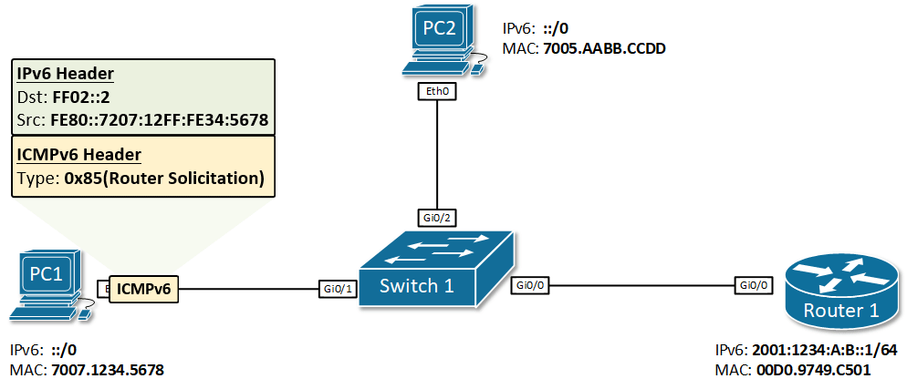
Figure 3. IPv6 Stateless Address Autoconfiguration exampleStep 4: The node configures its global unicast address Once PC1 gets back the Router Advertisement from Router 1, it combines the prefix 2001:1234:A:B::/64 with its EUI-64 interface identifier (7207:12FF:FE34:5678) resulting in the global unicast address 2001:1234:A:B:7207:12FF:FE34:5678/64. Because the Router Advertisement came from Router 1, PC1 sets its IPv6 default gateway to the link-local address of R1.
Now PC1 has a global unicast address and a default gateway. But the SLAAC process is not completed. PC1 must know for sure this auto-generated address is unique in the local segment. Thus, PC1 performs the Duplicate Address Detection (DAD) process.
Step 5: The node performs Duplicate Address Detection (DAD)
We have already explained the DAD process in detail in step 2. When PC1 auto-generate its global unicast address, it immediately joins the auto-generated solicited-node multicast group FF02::1:FF34:5678. To be sure that nobody else is using this address, PC1 then sends an ICMPv6 message called Neighbor Solicitation to the solicited-node address FF02::1:FF34:5678 and waits to see if a node replies back. If no reply is received back, PC1 knows that this address is unique and can start using it for communication outside its local segment including on the Internet.
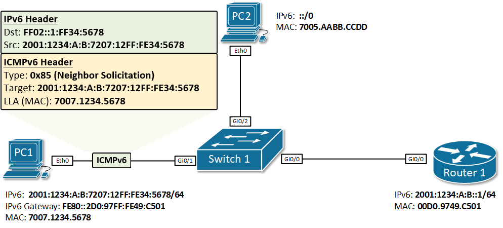
Figure 4. IPv6 Duplicate Address DetectionThe problem with SLAAC
So far so good. We have seen how a node can auto-configure a globally unique IPv6 address and a default gateway.
However, SLAAC does not provide DNS information and without DNS, many services such as surfing the Internet are not possible.
There is a field in the Router Advertisement header, that is designed to solve this problem.
Router Advertisement Flags
As we said above, by default, SLAAC does not provide DNS. And without DNS, many services that require resolution from URL addresses to IP won’t work. There is a field in the RA message that helps nodes understand where to get an IPv6 address and DNS information from.
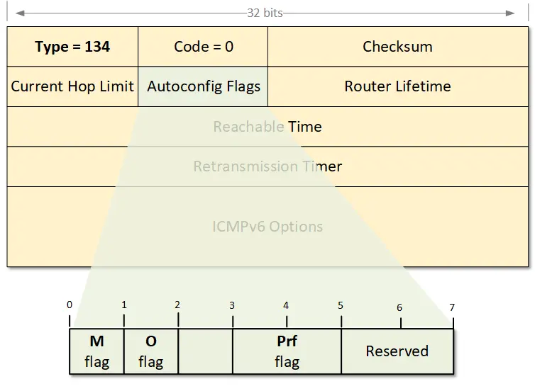
Figure 5. Examining the Router Advertisement FlagsIf the M-flag is set to 1, it indicates that addresses are available via DHCPv6. The router is basically telling the nodes to ask the DHCP server for addresses and DNS information. If the M flag is set, the O flag can be ignored because DHCPv6 will return all available information.
If the O-flag is set to 1, it indicates that DNS information is available via DHCPv6. The router is basically telling the nodes to auto-configure an address via SLAAC and ask the DHCP server for DNS information1
If neither M nor O flags are set, this indicates that no DHCPv6 server is available on the segment.
The Prf-flag (Default Router Preference) can be set to Low (1), Medium (0), or High(3). When a node receives Router Advertisement messages from multiple routers, the Default Router Preference (DRP) is used to determine which router to prefer as a default gateway.
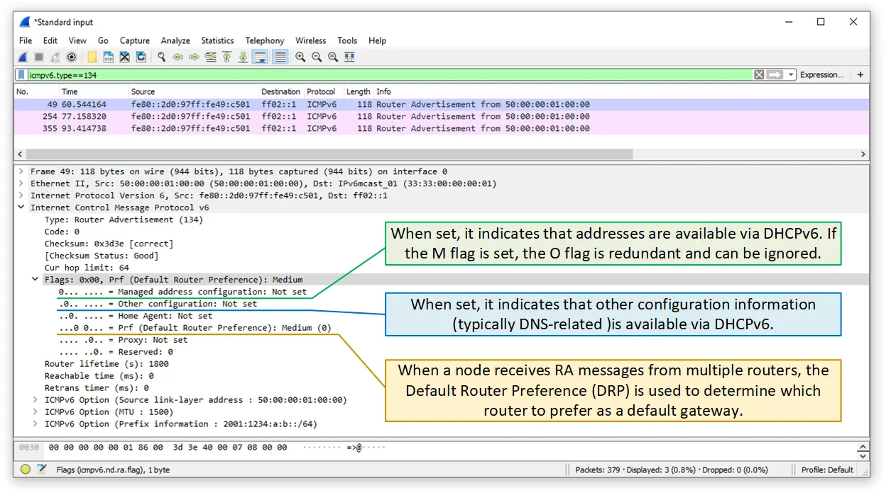
Figure 6. Examining the Router Advertisement Flags with WiresharkIPv6 on Windows
Windows and EUI-64
Prior to Windows Vista and Windows Server 2008, Windows hosts used only MAC addresses to create Interface Identifiers (EUI-64). Globally unique addresses and Link-local ones were created using the segment’s prefix plus the EUI-64 identifier which is generated from the physical address of the host. With the rise of network security, this was found to be a security vulnerability because an IPv6 address can be easily tied to a MAC address, which uniquely identifies physical equipment.
For example, imagine a user with a laptop connecting to an IPv6 network with global prefix X:X:X:X::/64. Via SLAAC, the user’s laptop will generate a globally unique address X:X:X:X:EUI-64. Let’s say the user goes to another place and connects to another IPv6 network with a global prefix Y:Y:Y:Y::/64. Well, the user’s laptop will generate a global unicast address Y:Y:Y:Y:EUI-64, if the user connects to a network Z:Z:Z:Z::/64 it will get IPv6 address Z:Z:Z:Z::EUI-64 and so on. You can clearly see that this creates an opportunity to track the user, because wherever he goes and to whichever network he connects, the second half of the globally unique IPv6 address his laptop generates is always the same. The user can not connect anonymously to any network if someone knows the EUI-64 interface identifier of his laptop. This can be easily exploited in many different ways, for example, websites and apps associating different IPv6 addresses to a particular device or user.
Companies realized that and introduced two concepts that help to improve user’s privacy - Random Interface Identifiers and Temporary IPv6 addresses. Let’s start by looking at what the first term is.
Randomize Identifiers
Randomize Identifiers feature has been introduced as a part of the privacy extension for SLAAC (Stateless Address Auto-configuration). After Windows Vista, this feature is enabled by default, so wherever a Windows host generates an IPv6 address with SLAAC, it always uses a Random Interface ID.
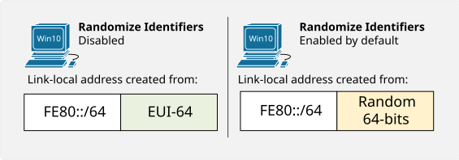
Figure 1. How Windows 10 creates a link-local addressLet’s look at part of the output of ipconfig /all command that displays the Physical address and the Link-local address of a Windows 10 host. You can see that the MAC address is 00-0A-12-34-56-78 and therefore if PC1 uses EUI-64 to generate a link-local address, it should have been fe80::20a:12ff:fe34:5678.
PS C:\Users\Administrator> ipconfig /all
Ethernet adapter Eth0:
Description . . . . . . . . . . . : Intel(R) PRO/1000 MT Network Connection
Physical Address. . . . . . . . . : 00-0A-12-34-56-78
Link-local IPv6 Address . . . . . : fe80::ec94:3519:1f19:711f%8(Preferred)
Well, obviously the current link-local address is not created using the MAC address but rather a Random Interface Identifier. This is because the Randomize Identifiers feature is enabled by default. We can check this using the PowerShell command get-netipv6protocol or using netsh interface ipv6 show global in the Windows Command Prompt
PS C:\Users\Administrator> get-netipv6protocol
DefaultHopLimit : 128
NeighborCacheLimit(Entries) : 256
RouteCacheLimit(Entries) : 4096
ReassemblyLimit(Bytes) : 67105632
IcmpRedirects : Enabled
SourceRoutingBehavior : DontForward
DhcpMediaSense : Enabled
MediaSenseEventLog : Disabled
MldLevel : All
MldVersion : Version2
MulticastForwarding : Disabled
GroupForwardedFragments : Disabled
RandomizeIdentifiers : Enabled
AddressMaskReply : Disabled
UseTemporaryAddresses : Enabled
MaxTemporaryDadAttempts : 3
MaxTemporaryValidLifetime : 7.00:00:00
MaxTemporaryPreferredLifetime : 1.00:00:00
TemporaryRegenerateTime : 00:00:05
MaxTemporaryDesyncTime : 00:10:00
DeadGatewayDetection : Enabled
We can use the following command in PowerShell to change the default behavior of a Windows host and disable the Randomize Identifiers. Disabling this feature forces Windows to use EUI-64 for Interface ID as you can see in the following example.
PS C:\Users\Administrator> set-netipv6protocol -RandomizeIdentifiers Disabled
PS C:\Users\Administrator>
PS C:\Users\Administrator> ipconfig /all
Description . . . . . . . . . . . : Intel(R) PRO/1000 MT Network Connection
Physical Address. . . . . . . . . : 00-0A-12-34-56-78
Link-local IPv6 Address . . . . . : fe80::20a:12ff:fe34:5678%8(Preferred)
Note that now the link-local address is generated from the MAC address and is exactly the value we expected.
Temporary IPv6 addresses
Another important concept, part of the Privacy Extension for SLAAC, is the use of Temporary IPv6 addresses. The idea behind temporary addresses is to have a public randomized IPv6 address that has a relatively short lifetime and can be used for anonymous outgoing connections. At every reboot, or IPv6 stack on/off, or when the Preferred-Lifetime expires this temporary address is re-generated using a Random Interface Identifier. Therefore, different outgoing connections can be initiated from different Temporary IPv6 addresses which minimize the risk of someone tracking the user by associating the global IPv6 address to physical equipment/user.
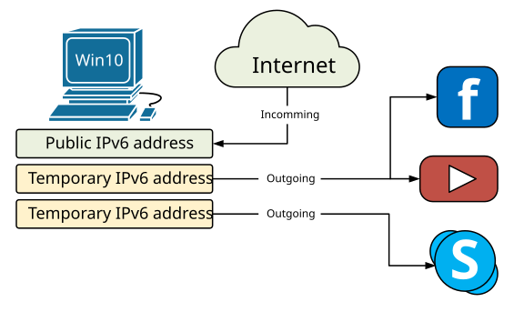
Figure 2. Windows 10 usage of Temporary IPv6 addressesOf course, the incoming connections are made to the real Public IPv6 address that doesn’t change. However, in a typical Internet user scenario, all connections are initiated by the user’s machine towards an Internet service (client-server communication).
PS C:\Users\Administrator> get-netipv6protocol
DefaultHopLimit : 128
NeighborCacheLimit(Entries) : 256
RouteCacheLimit(Entries) : 4096
ReassemblyLimit(Bytes) : 67105632
IcmpRedirects : Enabled
SourceRoutingBehavior : DontForward
DhcpMediaSense : Enabled
MediaSenseEventLog : Disabled
MldLevel : All
MldVersion : Version2
MulticastForwarding : Disabled
GroupForwardedFragments : Disabled
RandomizeIdentifiers : Enabled
AddressMaskReply : Disabled
UseTemporaryAddresses : Enabled
MaxTemporaryDadAttempts : 3
MaxTemporaryValidLifetime : 7.00:00:00
MaxTemporaryPreferredLifetime : 1.00:00:00
TemporaryRegenerateTime : 00:00:05
MaxTemporaryDesyncTime : 00:10:00
DeadGatewayDetection : Enabled
You can verify that this feature is enabled by default using either PowerShell’s command get-netipv6protocol or Command Prompt netsh interface ipv6 show privacy command.
C:\Users\Administrator>netsh interface ipv6 show privacy
Querying active state...
Temporary Address Parameters
---------------------------------------------
Use Temporary Addresses : enabled
Duplicate Address Detection Attempts: 3
Maximum Valid Lifetime : 7d
Maximum Preferred Lifetime : 1d
Regenerate Time : 5s
Maximum Random Time : 10m
Random Time : 6s
In some cases, you will see multiple Temporary IPv6 Addresses at a time (could be hundreds). This happens when the Maximum Preferred Lifetime of an address expires but there is a connection still opened using this particular address. In this case, another Temporary IPv6 address is created but the old one is not deleted until all opened connections are closed. More information on what the different lifetimes means can be seen in figure 3.
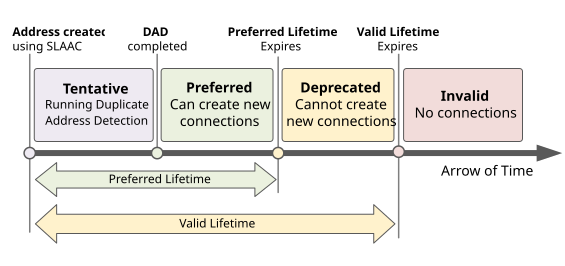
Figure 3. An IPv6 address States and Lifetimes